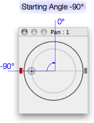

This window is designed in analogy to the I/O setup you may know from Protools. Now this is a sound editor so there are no busses except the master bus. What you can do here is to specify different routings from logical channels to physical channels of your audio hardware and vice versa.
In each tab, the table lists all available setups. You can add a setup by pressing the "Plus" button or remove one by selecting its name and pressing the "Minus" button. The number of setups is not limited, but two setups cannot have the same name.
Each setup is characterized by a number of logical channels, their mapping to physical channels and a starting angle which is used as a layout hint for the panorama window. The number of physical channels of your audio interface is specified in the audio tab of the programme preferences. In the screenshot above you can see that the interface was specified to have eight channels, corresponding to the columns on the right side of the table.
If you do not see enough physical channels (columns) in the table, be sure to switch the audio card in the control room frame to an interface with the appropriate number of channels, and re-open the I/O setup.
When you create a setup, by pressing on the plus-shaped button, it is automically named "Untitled" and has zero channels. You can edit the name by double-clicking on the table cell (confirm editing by pressing Return). Accordingly you can edit the number of channels. When you enter the number of channels, small grey button-like boxes are automatically placed in the first columns of the channel mapping. You can move the mapping of a channel by selecting its cell first (the cell changes colour), then use the mouse to Click+Drag the cell to its target column.
For example, in the screenshot above, the first four configurations just differ in the number of channels assigned (1, 2, 4, and 8 respectively), but they simply map logical channels to their corresponding physical channels. The configuration named "Out 2" however is a mono configuration like "Out 1" but the only logical channel (1) is now mapped to the second physical channel of the sound card (hence the box has been moved to the second column ). Similarily, the configuration "Out 3-6" is another quadro-channel configuration, but the channels play out on the sound card's physical channels 3, 4, 5, and 6.
The effect of the angle specification is illustrated in the following two pictures, corresponding to the setups "Out 1-2" (having an angle of -90 degrees) and "Out 1-4" (having an angle of -45 degrees). The first logical channel is indicated by the panorama position in these screenshots and appears in red:

The inputs tab works the same as the outputs tab. The routing configurations made here form the options for the source selection in the recorder dialog. For example, taking the above screenshot, when opening the recorder dialog in a monophonic document, the three configurations named "In 1", "In 3", and "In 4" will be available, which route physical channel 1, 3, and 4 respectively from the sound card to the one and only logical channel in the recorder.
Note that for input routings, the angle field has no meaning.